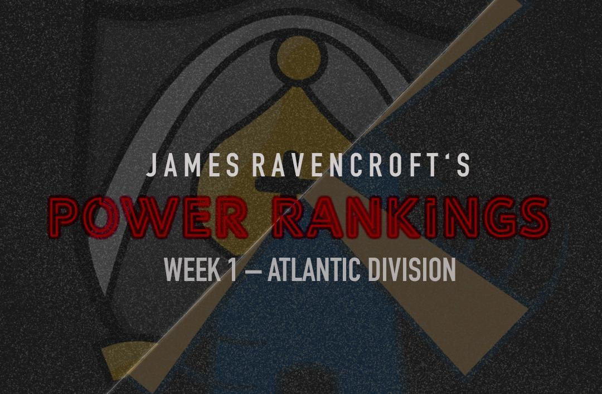
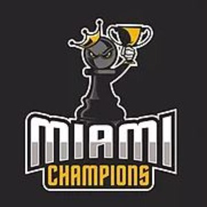

PRO Chess League Atlantic Division Power Rankings: Week 1
Week 1: Atlantic Division

Welcome to the first ever PRO Chess League power rankings. This year, we will be doing a weekly power rankings list. This week, we are covering the Atlantic division. For those of you who don’t know, The regular season of the PRO Chess League (PCL) is ten weeks long. Each week, teams will have to pick 4 players from their roster with an average standard rating (not blitz or rapid) of 2500 FIDE or less for each match. Every match consists of 16 games (aside from the out of conference matches) meaning every player plays 4 games, on rapid time control (15 minutes with a 2-second increment). At the end of the match, the winner of the match receives ten points for the match. Each will also earn as many points as points they earned in the match (i.e. If team A defeats team B 10.5-5.5, team A receives 20.5 points and team B receives 5.5 points). This means that every game matters, so even if a team has already lost, there is still reason to keep playing. If anything that I wrote was unclear, you can always see the PRO Chess League Official Rules. Looking forward to seeing the rest of the rest of the season, and hope you are too!
Note: These power Rankings are not just a result of a team’s standing in the division. They rely on other factors such as momentum, overall talent, schedule, etc. in addition to the team's performance. Just because one team defeats another does not guarantee that it will be ranked in front of the team that it beat.
1. Saint Louis Arch Bishops
Points: 20.5
The Bishops impressed in a first-round match that looked easy. Fabiano Caruana and Wesley So both scored well, finishing at 3.5 and 3 points, respectively. But what was really impressive was to see their third and fourth boards both score 2 points. Especially impressive was the 2180 FIDE rated Nicholas Rosenthal. Rosenthal picked up two wins for a top-heavy team, a performance that vaulted them to the top of these ranking. Imagine if they can keep this high level of play up from their lower boards all season. Wow.
2. Webster Windmills
Points: 19.5
The Reigning Atlantic division champs look in mid-season form after just one week. The team easily handled Miami with a brilliant sweep on board 2 from Illia Nyzhnyk. The top-heavy strategy employed by the windmills forced them to start 1979 Joshua Grabinsky, who managed to score a point for the team, which might be all they need from him. This team looks like the Arch Bishops’ primary competition in the Atlantic after one week, showing just how well put together this roster truly is.
3. Montreal Chessbrahs
Points: 19.5
The Chessbrahs have shown leaps and bounds of improvement from last year when they were relegated from the league, forced to qualify their way back in. And they kept the momentum going from the qualifier to beat down on one of the better teams in the league last year. This was the by far the most unexpected match of the week. The Chessbrahs are another example of a team with a powerful top three followed by a weaker board 4. But this has them soaring as the top scoring team of the week (tied with the Arch Bishops). Not to mention they just signed Anish Giri. This team looks better than its looked all last year and they didn’t even play their best player.
4. New York Marshalls
Points: 19
Week 1 is always good for a couple upsets, especially since teams are still finalizing their rosters, getting a game plan together and playing their first PRO Chess League games of the season. And the new kids on the block showed that they are not going to roll over to the competition this season. They produced a nice win over the Sopranos with solid contributions from all 4 boards. The Marshalls have now caught the attention of the rest of the league with a statement win on opening day. In a battle of New York teams, the Belarusian Sergei Azarov won the day in my book. The board 2 notched 3 points, the highest in the match, en route to a close but still decisive win. The quality of teams seems up from last year, especially considering the Marshalls and Chessbrahs had to qualify just to get here.
5. Pittsburgh Pawngrabbers
Points: 5.5
Not the performance fans were expecting to see in week one, but I’m certainly not giving up on this team. They had a solid team last year and they finished second in their division. But they started too slow and couldn’t turn it around late which produced a decisive loss for the Pawngrabbers. But I am still confident that they will turn it around given the resilience they showed last year. The addition of GM Sergey Erenburg should be a huge help to a team that has lots of depth but is lacking that third top caliber GM to put them over the top. It’s only week 1, so it’s definitely not time for the Pawngrabbers to panic.
6. Montclair Sopranos
Points: 7
The Sopranos may not have won, but they did inspire confidence going forward. They managed to get 2 clean wins from Carissa Yip, including her round one upset over 1st board Anton Demchenko. Unfortunately, her efforts paid no dividend. Aleksandr Lenderman needs to play better, putting up a measly 1.5 points as their top board. If his play improves—and it probably will considering his impressive performance last year—then the team will be just fine. This is a team who did not give up on its ability to find a high-quality fourth board and if this high-level play continues, they could be a very competitive team this season.
7. Miami Champions

Points: 6.5
Miami struggled early against the division champs, falling behind 3-1. After that, Webster never looked back. Eduardo Iturrizaga produced 3 points for the Champions, which should have been enough, but top-seeded S P Sethuraman only produced a single point, which is never going to get it done in this league. With only one week in the books, Miami already looks to be falling behind the rest of the pack. They need to pick it up next week against the Chessbrahs because this season could slip away very quickly if they don’t.
8. London Lions
Points: 6.5
You can’t help but feel bad for the Lions. They Transferred from the central division, with hopes of grandeur, and got steamrolled by what might be the best team in the entire league. I don’t think this team is finished, despite their rating in these power rankings, but I do believe that the time is now. Let’s face it: a loss like that on opening day really hurts a team’s morale. But if they can just forget it and go play chess for the next nine weeks, they can still compete in what is stacking up as a very deep Atlantic Division.